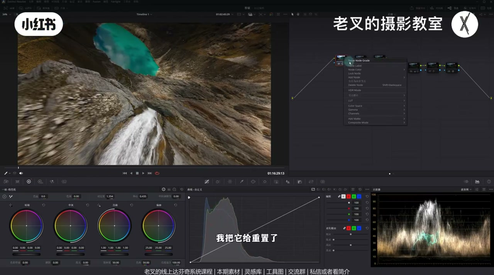
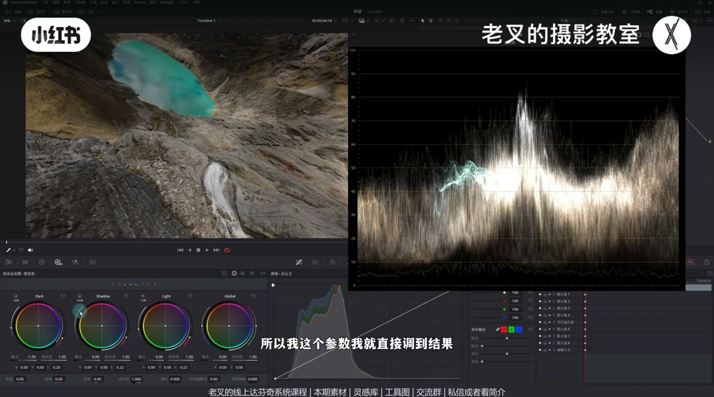
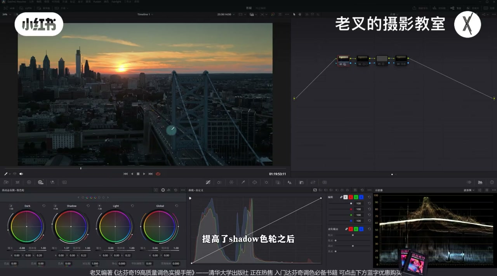
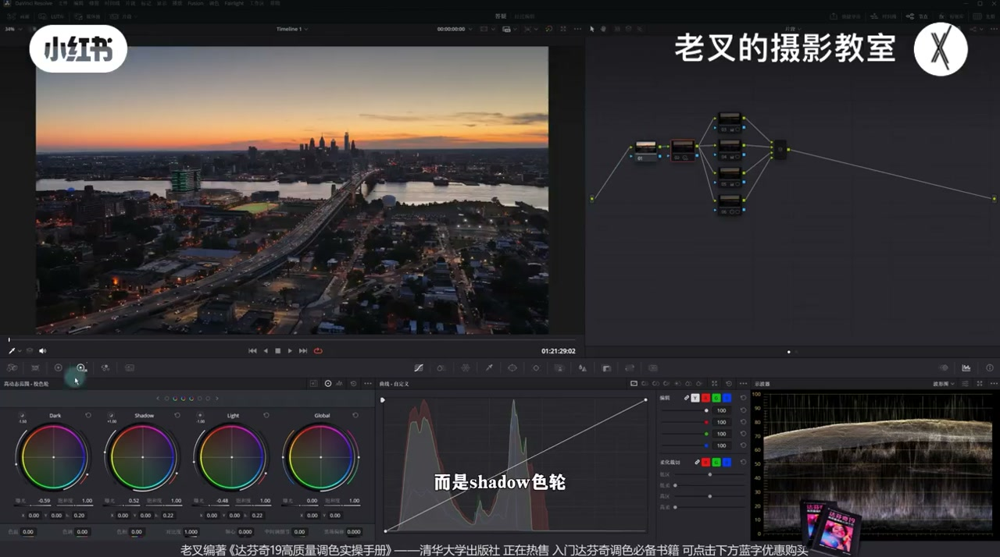
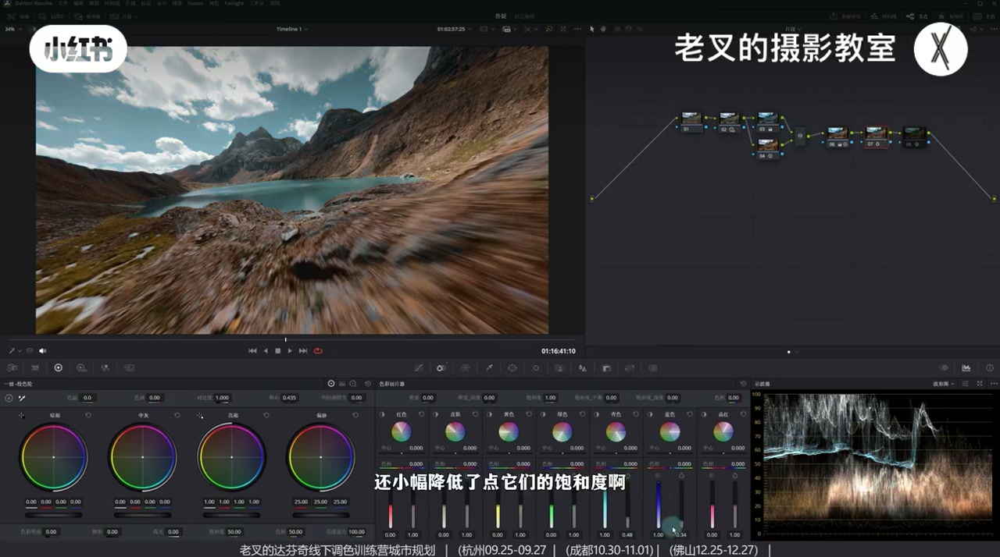

内容要点
穿越机等大幅运动素材难画遮罩时，老叉用 HDR 色轮在暗部或亮部内部做局部 S 曲线：Dark 降 + Shadow 抬展开暗部层次去灰、护天空；亮面则用 Light/Highlight 组合。对比暴力提暗部更自然。颜色侧用冷暖分离、向量示波器与密度收尾，重点仍是掌握 HDR。
知识结构
全局加对比度前半段好、后半天空过曝；波形见暗面信息堆积＝缺暗面层次。
Dark 降 + Shadow 抬，调范围让暗部整体参与；天空几乎不受影响。
同法提地面受光更自然；暴力用暗部轮/阴影滑块易发灰发脏。
地面灯在约30级→提 Shadow 非亮部；云立体用 Light 降 + Highlight 抬。
局部 S：暗部 Dark/Shadow，亮部 Light/Highlight，只在目标区出对比。
降色温铺冷→并行强化暖→向量微调→蓝青加密度；电影感外观可选。
难画遮罩时，用 HDR 在暗/亮内部做局部 S 曲线：展开层次去灰，而不是全局猛加对比或硬提暗部。先对波形找「该展哪一段」，再选对色轮对。
00:00-00:58立题：大幅运动难画遮罩，发灰别只会全局加对比
老叉开场：运动幅度大（如穿越机）再画遮罩会很麻烦。以穿越、整体发灰的素材为例——不画遮罩怎么强化质感与层次？去灰最简单是加对比度：一加就不灰了，但对本片前半段很好，移到后半天空却过曝——因为对比度让亮更亮、暗更暗，地面层次展开的同时天空也更亮。
重置后看波形：有一块曝光区域信息大量堆积（地面），且贯穿全片，说明画面缺少暗面层次。只要展开暗部层次，发灰就能解决大半。

00:58-02:11HDR：Dark 降 + Shadow 抬，天空几乎不受影响
用 HDR 色轮给暗部加对比：优先 Shadow 与 Dark。降低 Dark 曝光让暗部下降（别拉太多），并微调 Dark 起点/范围，把目标暗区视作整体，从中间一带开始往下降，而不是只压最底三分之一。再小幅提高 Shadow 曝光与范围。
波形被拉开，画面不那么灰；拉到后半段天空基本不受影响，弧面也更立体。力度可自行把控——思路比数值更重要。

02:11-03:06举一反三：自然提亮暗部，别暴力抬黑
同一思路用在别的画面：Dark 降、Shadow 抬后，地面被舒服地提亮，且不破坏暗部层次。若用暗部色轮或阴影滑块暴力提亮，也能亮，但易发灰、发脏、不自然。
HDR 做法本质是展开暗部层次：黑位尽量不动，只把暗区里「没那么暗」的受光面往上提，所以更自然。夜景楼体与灯光同理——展开暗部后立体感与灯光边界更清楚。

03:06-03:58对位选轮：地面灯走 Shadow，云走 Light/Highlight
若希望地面灯更亮，不要先提亮部——亮部一抬天空也亮。波形上这些受光面大约在 30 级，仍属暗面，应提 Shadow，并配合 Dark 降；还可降 Light/Highlight 加强天空层次，否则暗面提亮会显得过头。
云要更立体则换组合：亮面用 Light 降曝光 + Highlight 抬曝光，局部拉开高光内部层次。

03:58-04:37原理：局部 S 曲线——只在暗部或只在亮部出对比
黑白渐变加对比度后波形呈 S 形，即常说的 S 曲线去灰。HDR 的 Dark/Shadow 是把这个 S 只做在暗部；Light/Highlight 则只做在高光面。这就是「不画遮罩也能强化层次」的核心思路。
04:37-06:08颜色简说 + 收束：重点仍是练 HDR
素材已传知识分享平台，可私信或看简介加入后免费自取。颜色侧：画面偏缺冷色，略降色温色调铺冷，并行节点用向量示波器把暖色饱和度拉回，再用向量微调黄→橙、蓝→青；蓝青过艳则用色轮切片器加密度并略降饱和。最后可套达芬奇自带电影感外观创建器微风格化。
他强调：本期重点是 HDR；别的软件往往要靠曲线才能近似，掌握成本更高。一定要练 HDR 色轮。

完整转录（156段）
以下文本由 Whisper medium 模型自动转录，可能存在少量识别误差，已尽可能修正。
如果运动幅度大 比如说穿越期 你要画遮罩那肯定是会比较麻烦的 对吧
比如说这个素材 首先它是穿越 其次呢 整体发挥的厉害
那要怎么才能在不画之后的前提下去做好强化呢
我们要知道 要解决发挥 最简单的方式就是给画面增加对比度 对吧
我们一加对比度它就不灰了
但是对于这个画面 如果你增加对比度 对于前半段效果是非常好的
但是移动到后半部分 你发现天空过曝了 对吧
因为增加对比度是让亮的更亮 暗的更暗
虽然可以展开地面的层次 但是天空也变得更亮了
我把它给重置了 我们观察一下波形图
在波形图上 我们能发现有一个曝光区域是让画面发挥的罪魁祸首啊
是不是就这个位置 有大量的信息堆积在这个位置 也就是地面
而且它是贯穿全局的 也就是说画面缺少了暗面
我们需要展开暗部的层次 只要解决了它就能解决发挥的问题
这时候我们就可以使用HDR色轮
如果你对HDR色轮不熟悉的话 可以看这一期视频
我们要给暗部增加对比度 也就是需要展开这一部分的曝光层次
又因为它是处于暗面 所以我们就可以考虑HDR色轮中的Shadow跟Dark色轮
我们可以翻页在HDR色轮中
我把这个节点重置了 我们重新做一下
我们可以降低Dark色轮的曝光 你会发现暗部是不是往下降了
不用拉太多 我们稍微拉一拉
然后也可以微调一下这个Dark色轮的起点 它的范围
因为我们希望把这一部分视作整体
我们通过改变Dark色轮的范围 让它能够从中间部分开始往下降
而不是刚刚只有降了下面的三分之一
然后我们还需要提高一下Shadow色轮的曝光
稍微提高一点Shadow色轮的范围
因为我已经做过了 所以我这个参数我就直接调到结果
微调一下它的范围 然后小幅提高一点它的曝光
我们降低了Dark色轮的曝光 提高了Shadow色轮的曝光
我们看波希图的变化 它是不是展开了 对吧
而对于画面来讲 它也不灰了 解决了它一部分发灰的问题
我们往后拉拉到这一部分 你会发现天空基本上不受到影响
而且这一部分的弧面它也变得更加立体了 原本弧面也是发灰的
当然力度你可以自己把共享强一点弱点都可以
但这个思路其实很关键 我们甚至可以举一反三
比如说这个画面 当我们给它利用一样的思路
我降低了Dark色轮 提高了Shadow色轮之后
你会发现地面它提亮了 对吧
而且这种提亮是非常舒服的
它不会破坏我们暗部的层次
如果说我们非常暴力的给它 比如说用暗部色轮提亮
它也提亮了 可是它会发灰 对吧
就算我们用阴影滑块提亮 它也会发灰 而且显得特别脏
并且它不自然
但是我们用H加色轮提亮的这个方式
我们尽是在展开暗部的层次 让它黑位不发生改变
但是让暗部这个区域中没那么暗的部分给它往上提
也就是这个地面中受光面提亮
那么它就能够更加自然的提亮
再或者是这个画面
当我们也是一样的利用降低Dark色轮提高Shadow色轮的这个方式
你会发现整个画面 包括这边的楼它都变得更加立体了
这些灯也变得更加明确了
我们其实就是在展开暗部的层次
你看这一部分 对吧
我们再看一个案例
在这个画面中 如果你希望地面的灯更亮
不是提亮亮部 为什么呀
因为你提亮亮部了之后 天空也会变亮
这就不舒服了 对吧
我们可以在波形图中看到这些受光面
它大概在哪个曝光位置 它是不是在30级
这个其实是暗面 对吧
所以我们要提亮的不是亮面 而是Shadow色轮
我们这里提高了Shadow色轮 降低了Dark色轮之后
你会发现 对于这个画面来讲
是不是地面亮灯了 而且这个灯只影响地面
对于天空来讲 因为我这里还降低了Light色轮和Highlight色轮
让天空的层次更强
如果这两个色轮不做的话
其实暗面提亮会非常明显
再或者这个画面 我们看到
我们可以让这个云变得更加立体 怎么做呢
因为它是亮面
所以我们就要换一个组合 变成Light色轮和Highlight色轮
我降低了Light色轮的曝光 提高了Highlight色轮的曝光
你会发现 天上的云是不是就变得更加立体了
那么这究竟是为什么呢
原理其实非常简单
我们这里有一张黑白渐变图
我们给这个黑白渐变图增加对比度了之后
它的波形都会呈现出一个S形状 对不对
也就是我们常说的画一个S曲线
来让画面不发挥
但是我们刚刚的行为是只强化了局部
比如说暗面
那么我就希望这个S曲线只发生在暗面
所以我就需要降低更暗的Dark色轮的曝光
再提高稍微亮一点的Shadow色轮的曝光
我们通过它们参数的调整
就让它能够只在暗部产生一个S曲线
那亮面同样如此
当我给它降低了Light色轮的曝光
提高了Highlight色轮的曝光了之后
你会发现 只在高光面产生了一个S曲线
所以这个思路非常关键
再回到我们这个画面
这个素材呢
我传到了线上分享平台
大家也可以领取过去之后练练手
私信或者跟我姐姐来加入后
免费自取就行了
还要搭乘你的线上系统课程和线下调色训练营
那这个画面中颜色该怎么调呢
我觉得整体的画面有点缺颜色
暖色是有的 冷色不够
画面没有太多颜色的层次
那么我就来一个节点
稍微降低了点色温和色调
让它整体先带上冷色
然后再来个并行节点
用蜘蛛网把这个暖色薄度给它强化回来
这样一做的话 画面中冷与暖都有了
但是冷与暖都有
它并不代表好看
所以我又来了一个节点
用蜘蛛网稍微调了一下
整体的一个颜色的配别
比如说我把这个黄色往橙色方向移动了
给整体稍微加了一点暖
把蓝色往青色方向依靠
但是这样做完了之后
这一部分其实还好
往后一拉你会发现
这个蓝特别艳
对吧 这个青色也特别艳
所以我又来了一个节点
用色轮切片器增加青色和蓝色的密度
还小幅降低了点它们的饱和度
让这个蓝色更加耐看
最后我就再上一个
达芬吉自带的电感外观充的器
我稍微动了一下白边和色调
让画面带上一点点风格化
你看这样一做的话
其实整体的效果还是不错的 对吧
这个颜色我们简单一说
我不花太多的时间去重新做了
重点在于我们前面的H加色轮的使用
H加色轮
它其实可以算是
达芬吉非常独特
并且极具优势的工具
你别的软件想实现的话比较难
你可能得用曲线
不是说曲线做不到
曲线当然也能做到
但是它掌握起来会比较费劲
所以大家一定要好好地去练习
跟掌握H加色轮
它对你的调色一定是有非常大的帮助的
大家素材别忘了联系过去之后
也一起贴上看
感受一下这个调整的力度